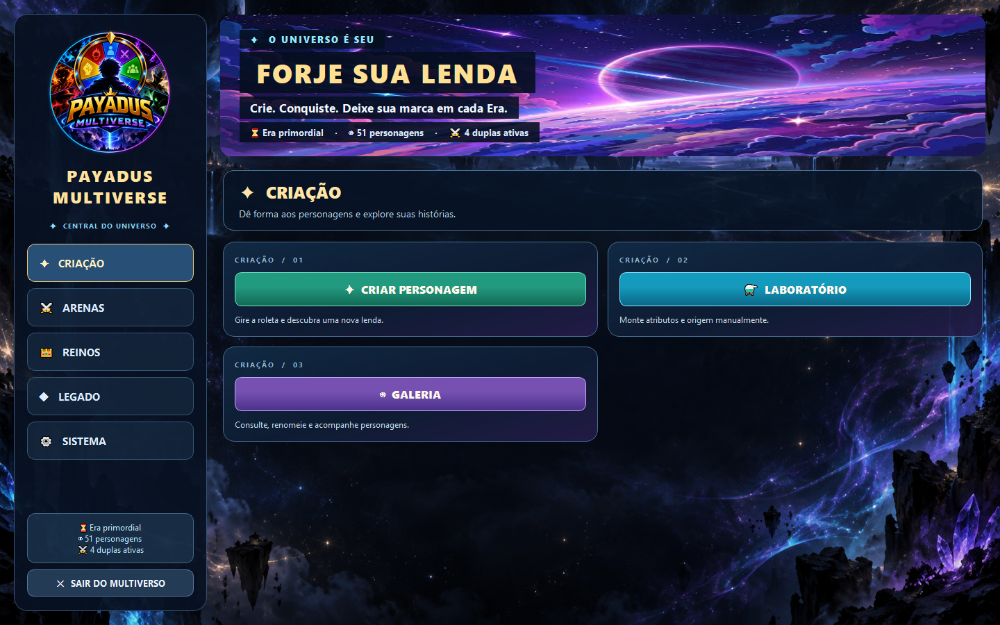
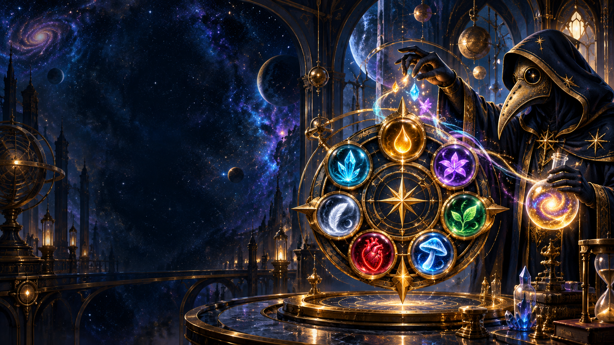

O universo é seu
Forje sua lenda no Payadus Multiverse
Crie personagens pela roleta, coloque-os à prova em batalhas e veja a história do seu universo nascer a cada era.
Dois aplicativos para Windows · um multiverso para construir
01 / O jogo principal
Cada personagem deixa uma marca.
O Payadus Multiverse reúne criação, competição e memória em um aplicativo de fantasia feito para acompanhar o seu próprio elenco.

Crie
Gire as roletas para descobrir origem, equipamentos, poderes e atributos de cada personagem.
Confronte
Monte torneios e desafios, forme duplas e guildas e dispute os tronos e as torres.
Registre
Acompanhe rankings, conquistas, rivalidades e a linha do tempo das eras do multiverso.
02 / A oficina de roletas
O sistema de criação também é seu.
A Payadus Engine é um aplicativo separado para montar roletas personalizadas. Defina as etapas, as condições, as chances e os bônus; valide e simule antes de levar o pacote ao Multiverse.
- Crie novas roletas e organize o fluxo visualmente.
- Combine nomes e balanceie opções com a biblioteca da Engine.
- Mantenha os sete atributos de combate do projeto.

03 / Do editor ao universo
Uma roleta nova em três passos.
- 1
Monte na Engine
Comece do pacote clássico ou crie um conjunto novo de roletas.
- 2
Valide e salve
Simule personagens e salve o pacote em um arquivo JSON.
- 3
Importe no Multiverse
Abra Sistema → Pacotes de roletas → Importar da Payadus Engine e escolha o arquivo.
04 / Para jogar
Leve o multiverso para o seu PC.
Os aplicativos são para Windows 64 bits. Quando o pacote estiver disponível no GitHub, baixe a versão completa e mantenha os arquivos de cada aplicativo em sua respectiva pasta.